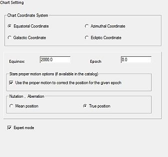
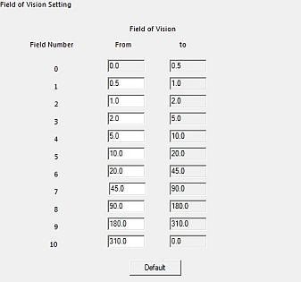
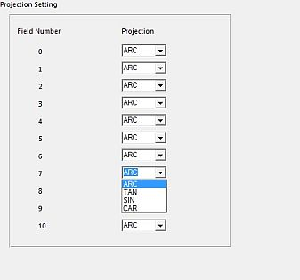
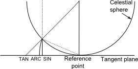
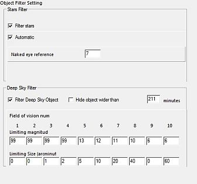
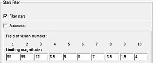
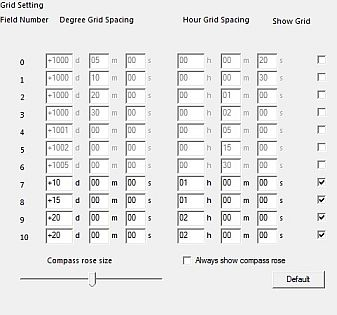
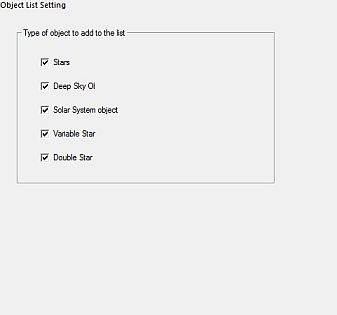

Mapa Coordenades
La configuració del mapa i les coordenades té sis pestanyes:
Mapa coordenades
 Aquí podeu especificar el sistema de coordenades per al mapa.
Hi ha quatre sistemes disponibles:
Aquí podeu especificar el sistema de coordenades per al mapa.
Hi ha quatre sistemes disponibles:
- Coordenades equatorials
- Coordenades azimutals
- Coordenades galàctiques
- Coordenades eclíptiques
Tipus de coordenades
Reconeixement de precessió, nutació i aberració La vostra selecció aquí determina quins tipus de coordenades mostrarà Cartes del Cel per a un objecte seleccionat en la barra d'estat, al peu del mapa. Si no heu marcat el Mode expert, podreu escollir en el quadre Tipus de coordenades quatre opcions:
- Equador aparent veritable, …
- Mitjana de la data …
- Mitjana J2000 …
- Astromètric J2000 …

En Mode expert podreu especificar més detalls:
{kind=link}
- Any de l'Equinocci (des de -20000 fins a 20000)
- Any de l'Època (des de -20000 fins a 20000)
- Moviment propi si està marcat es corregiran les posicions per a l'època donada.
- Posició mitjana o Posició vertadera per a Nutació i aberració.
Maneres ràpides de fer canvis senzills al sistema de coordenades són al menú amb Carta → Sistema de coordenades → [La vostra tria], o directament amb les icones de la barra esquerra en el grup sistema coordenades.
Camp de visió
 Aquí podeu especificar onze camps de visió (número 0 fins a 10).
{kind=link}
Per a cada interval podeu especificar el camp de visió mínim en graus, el qual esdevindrà màxim per al camp precedent.
El primer mínim dels intervals és 0.0° i l'últim màxim dels intervals és 360° (que apareix com 0.0°). No poden ésser modificats.
Aquests intervals estan llistats al peu de tots els quadres de cada pestanya dels Catàlegs i també són usats a les pestanyes Projecció, Filtre d'objectes i Espaiat de les graelles.
Canviar el camp de visió pot ser fet des del menú Carta → Camp de visió o directament amb les icones de la barra dreta del grup camp de visió. Un camp de visió molt acurat pot fixar-se manualment en la caixa de diàleg del menú Veure → Posició → Camp de visió.
Projecció
 Per a cada interval del camp de visió podeu escollir entre quatre tipus de projecció:
{kind=link}
- ARC Longitud d'arc. És el tipus de projecció per defecte fins a 180°. Correspon a la projecció d'una càmera Schmidt.
- TAN Tangent. Correspon a la projecció d'una foto obtinguda amb un telescopi o una lent fotogràfica. La projecció tangent té una gran distorsió per a camps més grans de 45° i divergeix per a 90°
- SIN Sinus. Usada per mostrar imatges en ràdioastronomia. La projecció de sinus solapa per a més de 90°.
- CAR Cartesiana. És una projecció entre 180° i 360°. No és de massa interès fora del fet que pot mostrar grans camps de visió.
 per E. Griessen, AIPS memo 27
{kind=link}
Filtre d'objectes
 Aquesta pestanya fixa els límits de magnitud per als estels i objectes de cel profund d'acord amb el camp de visió del mapa.
{kind=link}
Filtra els estels pot ser:
- desactivat (sols per a camps de visió petits),
- automàtic i llavors podeu especificar una magnitud com a Referència per a l'ull nu,
- manual i podeu especificar una magnitud límit per a cada camp de visió.
Un exercici curiós: No hi ha cap problema tècnic en desactivar el filtre d'estels en combinació d'un catàleg d'estels gran activat (i.e. HST GSC), amb un valor alt per a nombre de camp màx (i.e. 6) i un camp de visió de 20 graus. Ara veureu com un filtre d'estels desactivat per a un gran camp de visió no seria gaire convenient.

Filtra objectes de cel profund pot ser:
{kind=link}
- desactivat (sols per a camps de visió petits),
- manual activat, i podreu especificar una magnitud límit per a cada camp de visió.
També podeu filtrar objectes de cel profund grans especificant l'amplada màxima en minuts.
Espaiat de les graelles
 Aquesta pestanya fixa l'espaiat de les graelles per a cada camp de visió.
{kind=link}
- Graus és per a l'altura o la declinació
- Hores és per a l'azimut o l'ascensió recta
Podeu activar o desactivar el dibuix de graelles per a cada camp de visió.
Podeu activar o desactivar el dibuix de la brúixola i ajustar-ne la mida
Podeu activar o desactivar que es vegin les graelles de coordenades amb el menú Carta → Línies / Graelles → [Mostra la graella de coordenades/Afegeix la graella equatorial]
Llista dels objectes

Aquesta pestanya habilita posar en la llista els tipus d'objectes del mapa que desitgeu incloure-hi.
Feu clic en la icona  de la barra principal per obtenir la llista filtrada dels objectes mostrats al mapa.
de la barra principal per obtenir la llista filtrada dels objectes mostrats al mapa.
{kind=link}